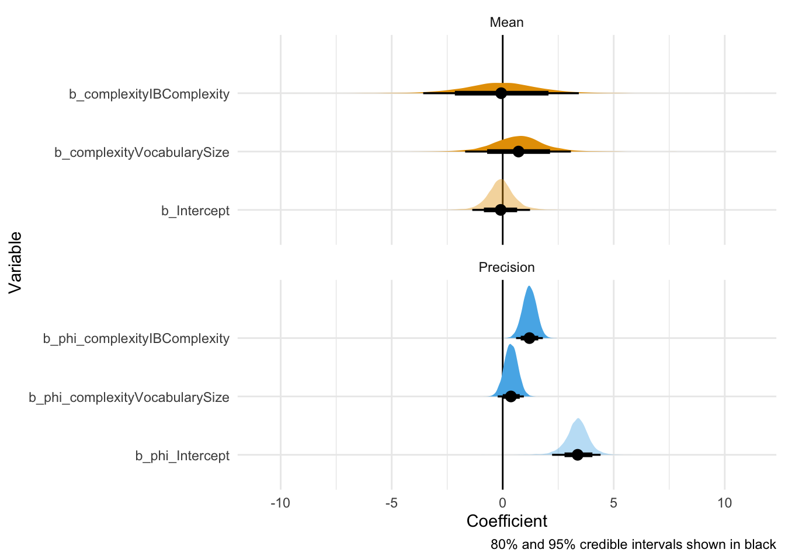
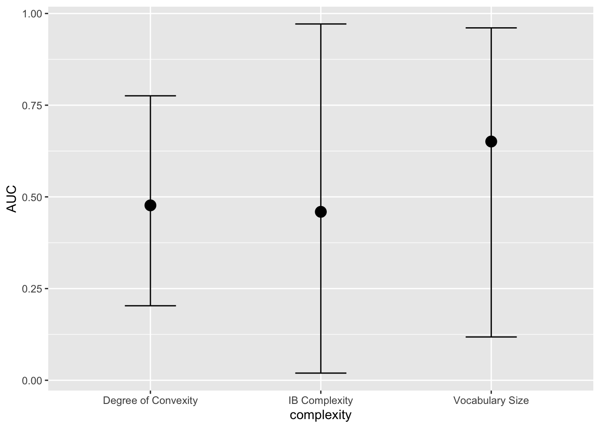
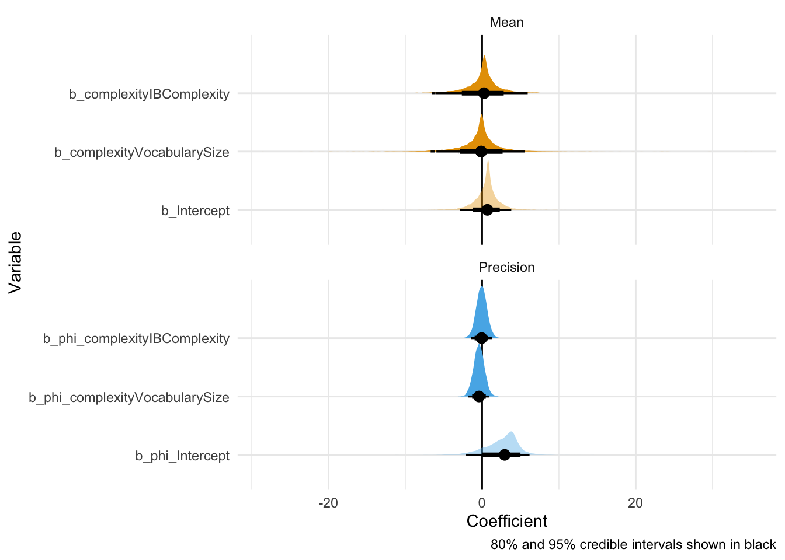
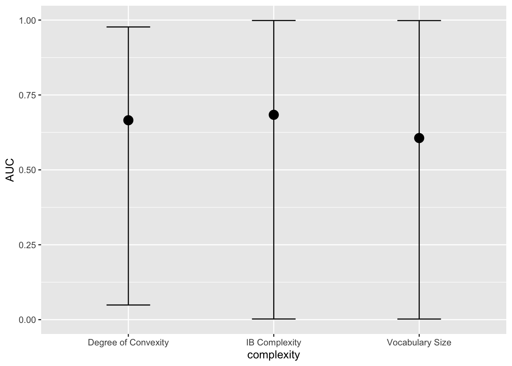

Code
library(readr)
library(ggokabeito)
library(ggplot2)
library(dplyr)
library(brms)
options(mc.cores = parallel::detectCores())
library(tidybayes)
library(stringr)
setwd('~')library(readr)
library(ggokabeito)
library(ggplot2)
library(dplyr)
library(brms)
options(mc.cores = parallel::detectCores())
library(tidybayes)
library(stringr)
setwd('~')df <- read_csv('~/Downloads/crossvalidation.csv') %>%
select(-zscore) %>%
mutate(AUC = ifelse(auc == 0, 0.00001, auc))
head(df)# A tibble: 6 × 5
complexity variants auc fold_nb AUC
<chr> <chr> <dbl> <dbl> <dbl>
1 IB Complexity Z18 0.758 0 0.758
2 IB Complexity Z18 0.853 1 0.853
3 IB Complexity Z18 0.902 2 0.902
4 IB Complexity Z18 0.901 3 0.901
5 IB Complexity Z18 0.820 4 0.820
6 IB Complexity Z18 0.906 5 0.906I’m fitting a model with both a mean (\(\mu\)) and a precision/dispersion parameter (\(\phi\))$. The second could be assumed to be constant as well but we do know that there is variation across observations and, as long as the model converges, I think that a reasonable assumption for this data set. I did simplify the structure on \(\phi\) a little though. It does not partially pool the effect of complexity at the level of variants.
Also, since the values in a Beta regression cannot be 0/1, I added a small epsilon to the few cases where the AUC was 0.
Note that \(\mu\) is on the logit scale and \(\phi\) on the logarithmic scale.
m <- brm(formula = bf(AUC ~ complexity + (complexity | variants), phi ~ complexity + (1 | variants)),
data = df,
family = Beta(),
chains = 4,
iter = 5000,
warmup = 2000,
file = '01beta-reg',
seed = 123,
control = list(adapt_delta=0.99, max_treedepth = 12)
)
posterior_beta <- m %>%
gather_draws(`b_.*`, regex = TRUE) %>%
mutate(component = ifelse(str_detect(.variable, "phi_"), "Precision", "Mean"),
intercept = str_detect(.variable, "Intercept"))
posterior_natural <- posterior_beta %>%
mutate(
# Apply inverse-link based on component
value_natural = case_when(
component == "Mean" ~ plogis(.value), # logit⁻¹ for Mean
component == "Precision" ~ exp(.value), # exp for Precision
TRUE ~ .value # fallback (unlikely needed)
)
)
ggplot(posterior_beta, aes(x = .value, y = forcats::fct_rev(.variable), fill = component)) +
geom_vline(xintercept = 0) +
stat_halfeye(aes(slab_alpha = intercept),
.width = c(0.8, 0.95), point_interval = "median_hdi") +
scale_fill_viridis_d(option = "viridis", end = 0.6) +
scale_slab_alpha_discrete(range = c(1, 0.4)) +
guides(fill = "none", slab_alpha = "none") +
labs(x = "Coefficient", y = "Variable",
caption = "80% and 95% credible intervals shown in black") +
facet_wrap(vars(component), ncol = 1, scales = "free_y") +
theme_minimal() +
scale_fill_okabe_ito()
We can see that there’s not that much difference across measures (across variant sets, allowing for partially pooled estimates for intercept and slope complexity by variant set). Here’s a clearer picture, depicting the marginal effects:
Marginal/conditional effects:
m %>%
conditional_effects()
This, again, suggests that the three complexity measures -evaluated across variant sets and folds- do not really differ.
Here are the coefficients for the population-level predictors:
m %>% fixef() %>% round(2) Estimate Est.Error Q2.5 Q97.5
Intercept -0.09 0.63 -1.37 1.24
phi_Intercept 3.35 0.54 2.19 4.37
complexityIBComplexity -0.08 1.76 -3.61 3.40
complexityVocabularySize 0.70 1.19 -1.71 3.06
phi_complexityIBComplexity 1.20 0.31 0.59 1.80
phi_complexityVocabularySize 0.37 0.30 -0.22 0.96You can see that the errors around the estimates are very large.
Since we know that the variant set matters quite a bit, we may repeat the analysis while focusing only on AUC of complexity measures when evaluated on the all set. I’ll keep the model structure the same for now.
df_all <- df %>% filter(variants == 'all')
m <- brm(formula = bf(AUC ~ complexity + (complexity | variants), phi ~ complexity + (1 | variants)),
data = df_all,
family = Beta(),
chains = 4,
iter = 5000,
warmup = 2000,
file = '02beta-reg',
seed = 123,
control = list(adapt_delta=0.99, max_treedepth = 12)
)
posterior_beta <- m %>%
gather_draws(`b_.*`, regex = TRUE) %>%
mutate(component = ifelse(str_detect(.variable, "phi_"), "Precision", "Mean"),
intercept = str_detect(.variable, "Intercept"))
ggplot(posterior_beta, aes(x = .value, y = forcats::fct_rev(.variable), fill = component)) +
geom_vline(xintercept = 0) +
stat_halfeye(aes(slab_alpha = intercept),
.width = c(0.8, 0.95), point_interval = "median_hdi") +
scale_fill_viridis_d(option = "viridis", end = 0.6) +
scale_slab_alpha_discrete(range = c(1, 0.4)) +
guides(fill = "none", slab_alpha = "none") +
labs(x = "Coefficient", y = "Variable",
caption = "80% and 95% credible intervals shown in black") +
facet_wrap(vars(component), ncol = 1, scales = "free_y") +
theme_minimal() +
scale_fill_okabe_ito()
Marginal/conditional effects:
m %>%
conditional_effects()
No real difference across the measures either.
Here are the coefficients for the population-level predictors for this model:
m %>% fixef() %>% round(2) Estimate Est.Error Q2.5 Q97.5
Intercept 0.58 1.62 -2.97 3.75
phi_Intercept 2.55 2.17 -2.34 6.04
complexityIBComplexity 0.03 2.92 -6.67 5.81
complexityVocabularySize -0.27 2.96 -6.66 5.46
phi_complexityIBComplexity -0.07 0.70 -1.45 1.32
phi_complexityVocabularySize -0.41 0.70 -1.78 0.96Same thing: You can see that the errors around the estimates are very large.